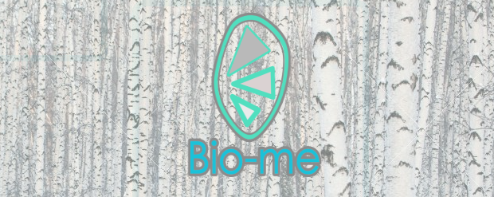

I do not only love Programming, solving bugs, and learning new languages and frameworks.
I have spent five years in the visual merchandising business, working as a finisher and becoming a finishing manager, thanks to those skills I developed an eye for color and the capacity to mimic the style that a client requests.
I work with Transportation Alternatives, a NYC organization that since 1973 has been promoting public transportation, walking, and cycling by reclaiming the streets from cars, and requesting safer infrastructure involving residents and government,
And with Bike New York, a non for profit organization whose mission is to transform lives and communities through bicycling. Which is accomplished through free educational programming, dynamic public events, expansive outreach, and consistent collaboration with community and government organizations.
I am studying at NYCCT for a BS in Mechanical Engineering.
And I do competitive cycling for fun.


KooK
Check it out!
A website to make a shared library where everyone can search and place books of their interest and everyone else can see them.
Technologies used: HTML5, CSS, JavaScript, expressjs, Mustache express, NodeJS, PostgresQL, googlebooks API
A website to make a shared library where everyone can search and place books of their interest and everyone else can see them.
Technologies used: HTML5, CSS, JavaScript, expressjs, Mustache express, NodeJS, PostgresQL, googlebooks API
Trek-Ster
Check it out!
A website build in Rails. I worked in a group to create a sci-fi space themed chatroom where you can create your own character and you can choose to conquer a planet or live in somebody else's planet.
There is a posibility of going to other planets and talking with its inhabitants.
Technologies used: HTML5, CSS, Ruby, JQuery, Ruby on Rails, Devise, Web Sockets, PostgresQL
A website build in Rails. I worked in a group to create a sci-fi space themed chatroom where you can create your own character and you can choose to conquer a planet or live in somebody else's planet.
There is a posibility of going to other planets and talking with its inhabitants.
Technologies used: HTML5, CSS, Ruby, JQuery, Ruby on Rails, Devise, Web Sockets, PostgresQL

Bio-me
Check it out!
I am interested in bringing awareness to biodegradable products.
Unfortunately, while there are a couple of label institutions that have a greater focus on the industrial and packaging fields, I haven't seen a website solely devoted to providing information on biodegradable products. Therefore, I decided to create a website focused on this topic, allowing users to explore varied options, while giving them the chance to learn generally about biodegradability and the overall waste problem in the US
Technologies used: HTML5, CSS, JavaScript, React, NodeJS, expressjs, PostgresQL, Webpack, Babel, Victory chart
I am interested in bringing awareness to biodegradable products.
Unfortunately, while there are a couple of label institutions that have a greater focus on the industrial and packaging fields, I haven't seen a website solely devoted to providing information on biodegradable products. Therefore, I decided to create a website focused on this topic, allowing users to explore varied options, while giving them the chance to learn generally about biodegradability and the overall waste problem in the US
Technologies used: HTML5, CSS, JavaScript, React, NodeJS, expressjs, PostgresQL, Webpack, Babel, Victory chart